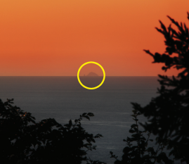
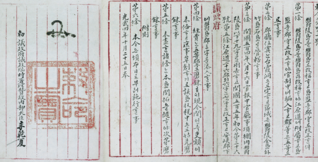

독도에 대하여
-
우리나라의 동쪽 끝이자 시작인 독도
대한민국 천연기념물 제 336호인 독도는 60여종의 식물, 130여종의 곤충, 160여종의 조류와 다양한 해양생물의 서식지이며, 동해안에 날아드는 철새들의 중간 기착지이기도 합니다.

-
독도는 지리적으로 울릉도의 일부로 인식
맑은 날이면 육안으로 독도를 볼 수 있습니다. 특히, 울릉도 주변에는 많은 부속도서가 있지만 날씨가 맑은 날에만 육안으로 보이는 섬은 독도가 유일합니다
 -
대한제국의 독도 통치
대한제국은 1900년 ‘칙령 제41호’에서 독도를 울도군(울릉도) 관할구역으로 시하였으며,울도군수가 독도를 관할하였습니다.
